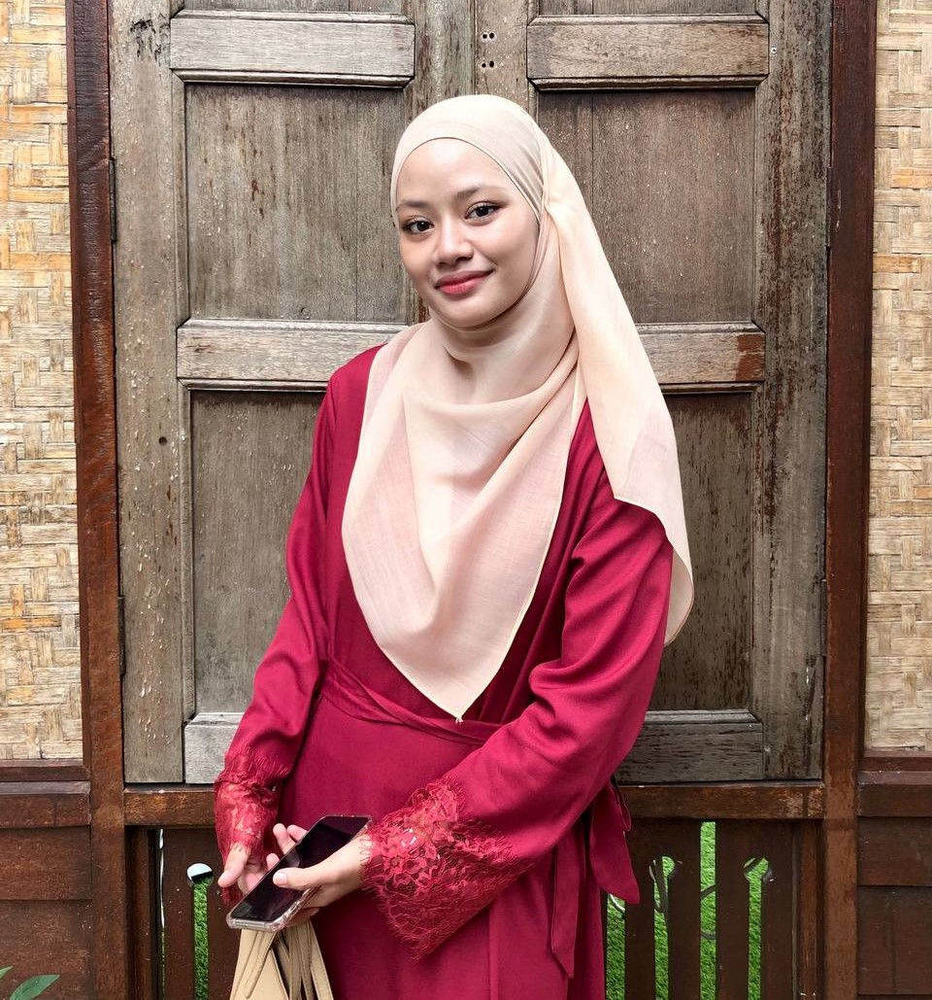

| 
|
| Name |
Nur Syarina Balqis binti Hishamudin |
| Nickname |
Rina |
| Date of Birth |
09 December 2002 |
| Birth Place |
Hospital Besar Alor Setar |
| Gender |
Female |
| Race |
Malay |
| Hobby |
Listening Music and Baking |
Tomyam, a classic Thai dish noted for its spicy and sour broth, fragrant herbs, delicious fish, and a blast of citrusy freshness,
is one of your top selections. You also appreciate Kek Batik, a scrumptious Malaysian dessert constructed with layers of creamy chocolate and
crispy biscuits that provide a delightful combination of sweetness and texture. Llao Llao, a creamy and creamy yogurt-based delicacy topped
with a choice of tasty toppings, provides a lovely juxtaposition of creamy and crunchy textures for a refreshing dessert alternative.
Finally, you enjoy the rich joys of Kueytiaw Kungfu, a savoury noodle dish that combines stir-fried noodles, delicate meats, colourful veggies,
and tantalising spices to create a full and delectable dinner.
Some of My Favourite Song
|